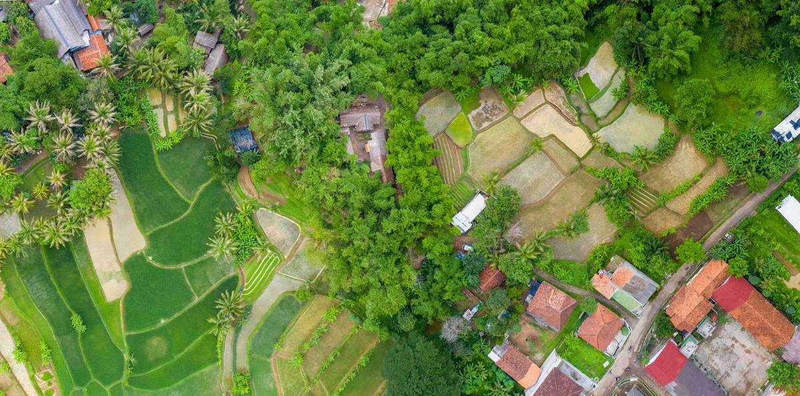
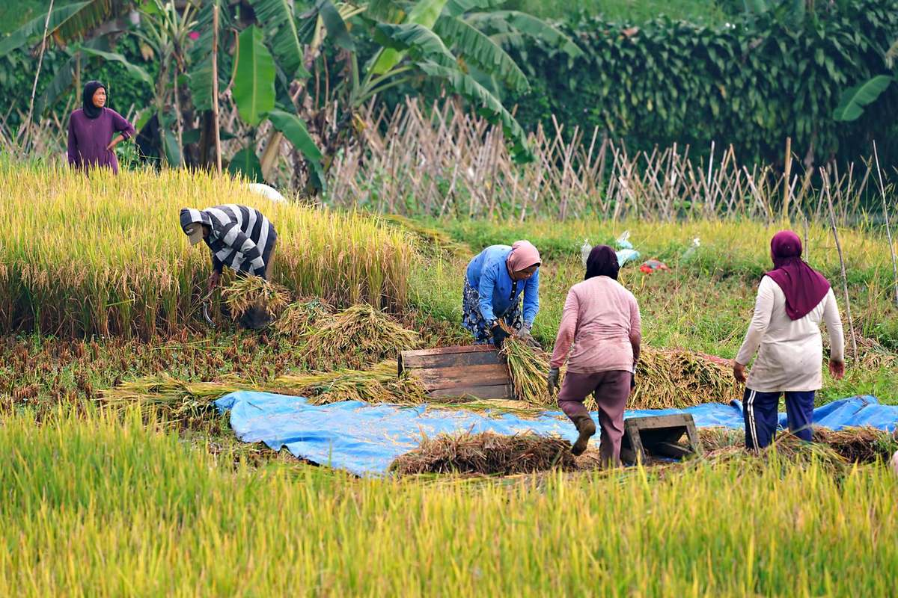
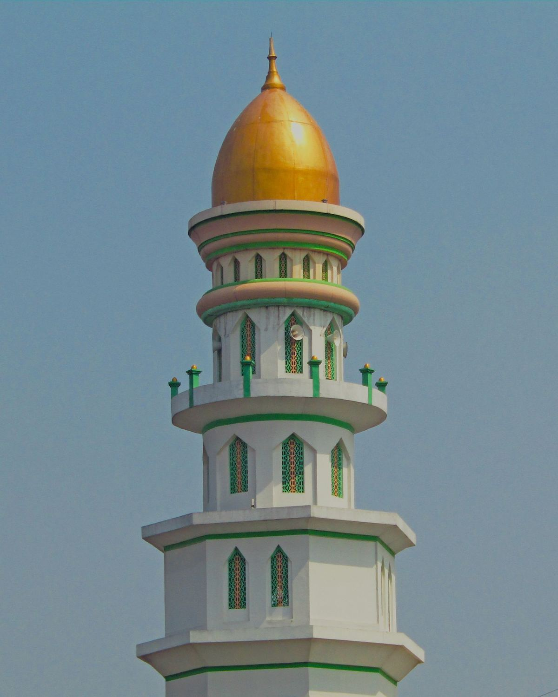
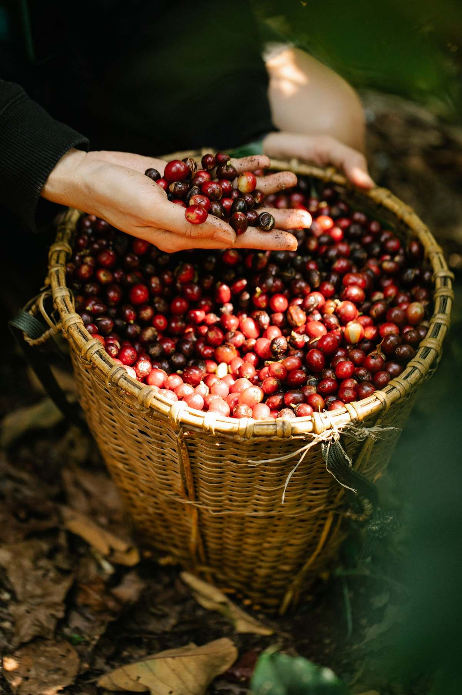

Selamat datang di portal resmi Desa Sukamaju. Urus surat keterangan, ikuti pengumuman desa, dan terhubung dengan kegiatan Masjid Al-Ikhlas — semua dari satu halaman, tanpa harus bolak-balik ke balai desa.

Desa agraris di kaki perbukitan dengan semangat gotong royong yang masih kental — dan pemerintahan desa yang berbenah menuju layanan digital.
"Website ini kami hadirkan agar warga tidak perlu meninggalkan sawah atau pekerjaannya hanya untuk mengurus selembar surat. Sampaikan kebutuhan lewat WhatsApp, datang ke balai desa saat surat siap diambil. Semoga bermanfaat untuk seluruh warga Sukamaju."
H. Bambang Sutrisno
Kepala Desa Sukamaju, periode 2021–2027
Pilih jenis surat, siapkan syaratnya, lalu isi formulir pengajuan di bawah — perangkat desa akan mengonfirmasi lewat WhatsApp dan memberi tahu kapan surat bisa diambil.
Pengantar perekaman KTP-el, KK baru/perubahan, dan keterangan domisili. Syarat: KK lama, KTP, dan surat pengantar RT/RW. Selesai 1 hari kerja.
Untuk syarat pinjaman KUR, buka rekening bisnis, dan pendaftaran bantuan UMKM. Syarat: KTP, KK, foto tempat usaha. Gratis, selesai 1 hari kerja.
Untuk keringanan biaya berobat, pendidikan, dan usulan bantuan sosial. Syarat: KTP, KK, dan verifikasi perangkat dusun. Diproses dengan menjaga privasi warga.
Pengantar akta kelahiran (syarat: surat keterangan lahir dari bidan/RS, KK, KTP kedua orang tua) dan surat kematian untuk pembaruan data kependudukan.
Berkas N1–N4 untuk pencatatan di KUA. Syarat: KTP, KK, akta kelahiran, dan pas foto. Ajukan minimal 10 hari sebelum hari akad.
Keterangan berkelakuan baik, belum menikah, penghasilan orang tua, ahli waris, dan legalisasi dokumen. Tanyakan dulu syaratnya lewat WhatsApp agar tidak bolak-balik.
Masjid jami' Desa Sukamaju — salat lima waktu berjamaah, kajian rutin, TPQ anak, dan kegiatan sosial. Pintu terbuka untuk semua warga.
| Waktu | Jam |
|---|---|
| Subuh | 04.18 WIB |
| Dzuhur | 11.36 WIB |
| Ashar | 14.58 WIB |
| Maghrib | 17.51 WIB |
| Isya | 19.04 WIB |
Jadwal mengikuti kalender Kemenag setempat & dapat bergeser 1–2 menit. Salat Jumat: khutbah mulai 11.45 WIB.
| Kegiatan | Waktu |
|---|---|
| Kajian Ahad Pagi + sarapan bersama | Ahad, 05.30–07.00 |
| Pengajian ibu-ibu (Muslimat) | Rabu, 15.30–17.00 |
| Tahsin & tadarus bapak-bapak | Jumat, ba'da Isya |
| TPQ anak (Senin–Kamis) | 16.00–17.30 |
| Remaja masjid & hadroh | Sabtu malam Ahad |
Infaq & sedekah pembangunan serambi masjid dapat dititipkan ke takmir atau transfer — laporan kas dipasang di papan masjid setiap Jumat. Kontak takmir ada di bagian Kontak bawah.
Informasi resmi perangkat desa dan takmir — waspadai kabar yang tidak bersumber dari halaman ini atau grup WA resmi dusun.
Posyandu Melati dusun Krajan & Wetan: penimbangan balita, imunisasi, dan pemberian vitamin A. Bawa buku KIA. Mulai pukul 08.00 di balai desa.
Pekerjaan paving 420 m dari dana desa tahap II telah rampung dan bisa dilalui. Terima kasih kepada warga yang bergotong royong selama 12 hari pengerjaan.
Masjid Al-Ikhlas membagikan santunan untuk 34 anak yatim & dhuafa desa ba'da kajian Ahad pagi. Donatur yang ingin berpartisipasi silakan hubungi takmir.



Cerita warga Sukamaju tentang layanan desa & masjid.
"Ngurus SKU buat KUR tinggal isi formulir dari rumah, besoknya dikabari surat jadi. Nggak perlu izin setengah hari dari kebun."
"TPQ di masjid membuat anak saya semangat mengaji, ustadzahnya sabar. Laporan hafalan dikirim ke WA orang tua tiap bulan."
"Setiap Jumat laporan kas masjid ditempel terbuka. Warga jadi percaya dan makin rajin infaq."
Informasi praktis layanan desa & masjid.
Tidak. Seluruh layanan administrasi Desa Sukamaju gratis sesuai Perdes. Bila ada yang meminta bayaran di luar ketentuan, laporkan langsung ke WhatsApp Kepala Desa di bagian kontak.
Umumnya 1 hari kerja sejak berkas lengkap dan terverifikasi RT/RW. Pengantar nikah & berkas yang perlu tanda tangan camat bisa 2–3 hari. Kamu akan dikabari lewat WhatsApp saat surat siap diambil.
Bisa untuk tahap pengajuan — isi formulir online dan kirim foto berkas lewat WhatsApp. Pengambilan fisik surat tetap perlu tanda tangan, bisa diwakilkan keluarga sedomisili dengan membawa KK asli.
Datang langsung ke takmir Masjid Al-Ikhlas atau transfer ke rekening kas masjid yang tertera di papan pengumuman masjid. Setiap donasi dicatat dan dilaporkan terbuka tiap Jumat.
Senin–Jumat pukul 08.00–14.00 WIB (istirahat Jumat 11.30–13.00). Untuk keadaan darurat (kematian, musibah), perangkat dusun siap dihubungi 24 jam lewat kontak di bawah.
Simpan nomor-nomor ini — pilih sesuai keperluanmu.